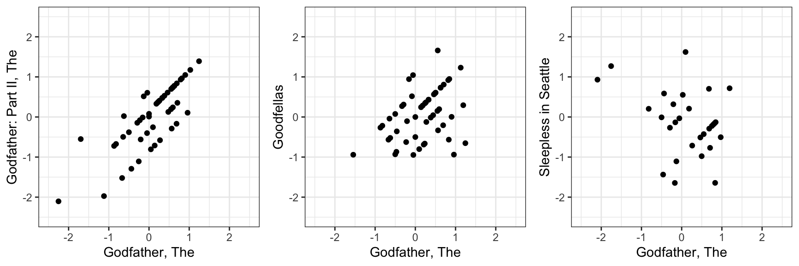
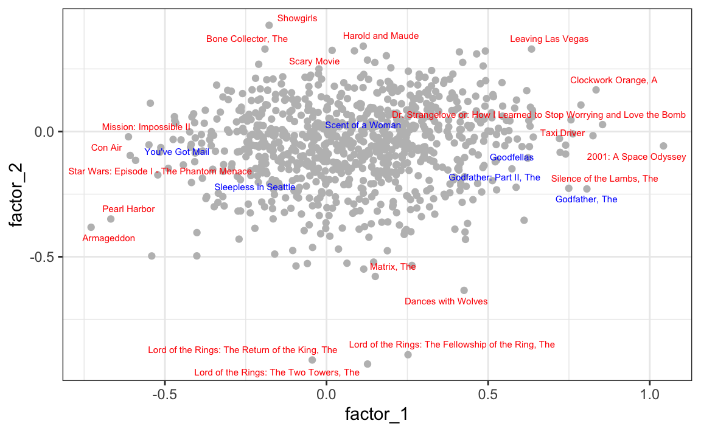

fit <- fit_als(lambda = 3.636364e-05)
train_set[, resid := rating - clamp(fit$mu + fit$a[userId] + fit$b[movieId])]25 Latent Factor Models
Many data problems involve large matrices with structure we cannot see directly. Latent factor models provide a powerful way to uncover this hidden structure. The key idea is that observed data often reflect the influence of a smaller number of unobserved (latent) features. These latent factors capture patterns such as groups of similar individuals, groups of similar items, or shared underlying attributes that drive the observed values.
In the previous chapter, we introduced the model
\[ Y_{ij} = \mu + \alpha_i + \beta_j + \varepsilon_{ij} \]
to describe movie ratings. This model accounts for differences between users through \(\alpha_i\) and differences between movies through \(\beta_j\). However, it treats all movies and all users as unrelated beyond these simple averages. In practice, we know that groups of movies tend to be liked by the same kinds of users, and groups of users tend to give similar ratings to the same kinds of movies. This shared structure is not captured by user and movie effects alone.
To see this, we compute residuals
\[ r_{ij} = y_{ij} - (\hat{\mu} + \hat{\alpha}_i + \hat{\beta}_j) \]
by fitting the model to the train_set dataset using the fit_als function, both defined in the previous chapter,
and comparing the residuals for The Godfather with three other films:

These correlations range from strongly positive to negative. Specifically the correlations between The Godfather and The Godfather part II, Goodfellas, and Sleepless in Seattle are 0.84, 0.49, and -0.42, respectively. Users who love The Godfather also tend to like The Godfather Part II and Goodfellas, but often dislike Sleepless in Seattle. These kinds of relationships are because movies share latent characteristics: genre, tone, style, era, or audience appeal. Similarly, users have latent traits that make them prefer some types of movies over others.
Latent factor models are designed to capture exactly this type of structure. Instead of estimating thousands of separate parameters, they represent users and movies in a lower-dimensional space defined by a small number of latent features. The winning team of the Netflix Prize competition relied heavily on this idea, using latent factor models to achieve an improvement in predictive accuracy.
Although recommendation systems are one of the most famous applications, latent factor models are widely used in other fields, such as genomics (to model hidden biological structure), text analysis (topics in documents), marketing (customer segmentation), and finance (risk factors underlying asset returns).
In this chapter, we introduce latent factor models in the context of recommendation systems, connect them to principal component analysis (PCA), and show how the singular value decomposition (SVD) provides a unifying mathematical foundation. We will build models that capture hidden structure in rating data and show how these models further improve prediction accuracy.
25.1 Factor analysis
We start with a simple simulated example. Specifically, we simulate ratings \(Y_{ij}\) for six movies and 120 users. For simplicity we assume that these ratings have been adjusted for the movie and user effects, as described in Chapter 24. We stored the results for 120 user and 6 movie effects in the object y:
dim(y)
#> [1] 120 6If we examine the correlation between movies based on user ratings, we notice a pattern:
cor(y)
#> Godfather Godfather 2 Goodfellas Scent of a Woman You've Got Mail Sleepless in Seattle
#> Godfather 1.000 0.671 0.558 -0.527 -0.734 -0.721
#> Godfather 2 0.671 1.000 0.471 -0.450 -0.649 -0.739
#> Goodfellas 0.558 0.471 1.000 -0.888 -0.487 -0.505
#> Scent of a Woman -0.527 -0.450 -0.888 1.000 0.451 0.475
#> You've Got Mail -0.734 -0.649 -0.487 0.451 1.000 0.756
#> Sleepless in Seattle -0.721 -0.739 -0.505 0.475 0.756 1.000It appears that ratings are positively correlated within genres, for example, among mob movies or among romance movies, and negatively correlated across the two genres. In statistics, such patterns are often explained by factors: unobserved, or latent, variables that account for the correlations or associations among the observed variables. Under certain assumptions, which we will describe below, these latent factors can be estimated from the data and used to capture the underlying structure driving the correlations.
One approach is to use our knowledge of movies genres to define a factor that distinguishes between mob and romance movies:
q <- c(1, 1, 1, -1, -1, -1)We code mob movies with -1 and romance movies with 1.
To quantify each user’s genre preferences, we fit a separate linear model for every user \(i\) (rows of y) by using apply:
We include -1 in the formula because the residuals were constructed to have mean 0, so no intercept is needed.
Each call to lm returns an estimated coefficients representing the difference in average ratings between mob and romance movies. A positive value indicates a preference for mob movies, a negative value indicates a preference for romance movies, and values near 0 suggest no strong preference.
Collecting these across users gives us p, a vector with one entry per user. The histogram below shows users cluster into these three type:
We now show that we can approximate each rating \(Y_{ij}\) using just the product of two vectors: one describing user preferences (\(p\)) and one describing movie characteristics (\(q\)). To work with matrix algebra, we convert the vectors into matrices and multiply them:
The points fall roughly along the diagonal, which means the model captures a good amount of structure in the data. However, there is still substantial unexplained variation. Even after removing the “mob vs. romance” effect, we still see correlation patterns:
cor(y - p %*% t(q))
#> Godfather Godfather 2 Goodfellas Scent of a Woman You've Got Mail Sleepless in Seattle
#> Godfather 1.000 0.185 -0.545 0.557 -0.280 -0.198
#> Godfather 2 0.185 1.000 -0.618 0.594 -0.186 -0.364
#> Goodfellas -0.545 -0.618 1.000 -0.671 0.619 0.650
#> Scent of a Woman 0.557 0.594 -0.671 1.000 -0.641 -0.656
#> You've Got Mail -0.280 -0.186 0.619 -0.641 1.000 0.353
#> Sleepless in Seattle -0.198 -0.364 0.650 -0.656 0.353 1.000Looking more closely, this structure appears to come from whether or not Al Pacino is in the movie. This suggests we can improve the model by adding a second latent factor, one that distinguishes Pacino films from non-Pacino films. We do this by adding a second column to q:
Now each movie is described by two latent factors:
- Mob vs. romance
- Al Pacino vs. not Al Pacino
We then fit a model for each user to estimate their preference for each factor:
Because q now has two columns, lm returns two coefficients per user. The first captures mob/romance preference, and the second captures whether the user tends to like Al Pacino films.
We use t (transpose) because apply stacks results as columns, but we want one user per row.
With two factors, our predictions improve:
And now, if we look at the residual correlation
cor(y - p %*% t(q))
#> Godfather Godfather 2 Goodfellas Scent of a Woman You've Got Mail Sleepless in Seattle
#> Godfather 1.00000 -0.3597 0.00716 0.00716 0.2412 0.41857
#> Godfather 2 -0.35970 1.0000 -0.04429 -0.04429 0.4955 0.20741
#> Goodfellas 0.00716 -0.0443 1.00000 1.00000 -0.0339 -0.00554
#> Scent of a Woman 0.00716 -0.0443 1.00000 1.00000 -0.0339 -0.00554
#> You've Got Mail 0.24118 0.4955 -0.03395 -0.03395 1.0000 -0.27145
#> Sleepless in Seattle 0.41857 0.2074 -0.00554 -0.00554 -0.2714 1.00000there is no clear pattern left. The two latent factors now explain the main structure in the data.
This approximation with two factors can be written as:
\[ Y_{ij} \approx p_{i1}q_{j1} + p_{i2}q_{j2}, i = 1 \dots, I \mbox{ and } j = 1, \dots, J \] with \(I\) the number of users and \(J\) the number of movies.
Using matrix representation we can rewrite the above question like this:
\[ \mathbf{Y} \approx \mathbf{P}\mathbf{Q}^\top \] with \(\mathbf{Y}\) an \(I\times J\) matrix with entries \(Y_{ij}\), \(\mathbf{P}\) a \(I\times K\) matrix with entries \(p_{ik}\), and \(\mathbf{Q}\) a \(J\times K\) matrix with entries \(q_{jk}\).
This analysis provides insights into the process generating our data since \(\mathbf{P}\) contains user-specific parameters and \(\mathbf{Q}\) contains movie-specific parameters. The approach is often referred to as matrix factorization because the rating matrix has been factorized into two lower-dimensional, interpretable matrices.
Note that the apporach also provides compression since the \(120 \times 6 = 720\) observations can be well approximated by a matrix multiplication of a \(120 \times 2\) matrix \(\mathbf{P}\) and a \(6 \times 2\) matrix \(\mathbf{Q}\), a total of \(252\) parameters.
In our example with simulated data, we deduced the factors \(\mathbf{q}_1\) and \(\mathbf{q}_2\) from the sample correlation and our knowledge of movies. These ended up working well. However, in general deducing factors is not this easy. Furthermore, factors that provide good approximation might be more complicated than containing just two values. For example, The Godfather III has a romantic subplot so we might not know what value to assign it in q_1.
So, can we estimate the factors? A challenge is that if \(\mathbf{P}\) is unknown, our model is no longer linear: we can’t use lm to estimate both \(\mathbf{P}\) and \(\mathbf{Q}\). In the next sections, we describe how PCA can be used to estimate \(\mathbf{P}\) and \(\mathbf{Q}\).
We used apply and lm to estimate p. But there is a faster way to compute these estimates using linear algebra.
The lm function works by minimizing the sum of squared residuals. In matrix form, this leads to the normal equations:
\[ (\mathbf{q}^\top\mathbf{q}) \, \hat{\mathbf{p}}_i = \mathbf{q}^\top \mathbf{y}_i \]
where \(\mathbf{y}_i\) is the column vector representing the \(i\)-th row of y passed to the apply call.
The key observation is that \(\mathbf{q}\) is the same for every user, so running lm repeatedly is wasteful: it recomputes the same matrix operations each time. Instead, we can solve the system once and apply it efficiently to all users by using matrix operations:
This computes all \(\hat{\mathbf{p}}_i\) values at once, avoiding thousands of separate model fits.
25.2 Connection to PCA
Notice that in Section 23.5 we learned that if we perform PCA on a matrix \(\mathbf{Y}\), we obtain a transformation \(\mathbf{V}\) that permits us to rewrite:
\[ \mathbf{Y} = \mathbf{Z} \mathbf{V}^\top \]
with \(\mathbf{Z}\) the matrix of principal components.
Let’s perform PCA on the \(\mathbf{Y}\) constructed in the previous section and examine the results:
pca <- prcomp(y, center = FALSE)First, notice that the first two PCs explain over 85% of the variability:
pca$sdev^2/sum(pca$sdev^2)
#> [1] 0.6939 0.1790 0.0402 0.0313 0.0303 0.0253Next, notice that the first column of \(\mathbf{V}\):
pca$rotation[,1]
#> Godfather Godfather 2 Goodfellas
#> 0.306 0.261 0.581
#> Scent of a Woman You've Got Mail Sleepless in Seattle
#> -0.570 -0.294 -0.300is assigning positive values to the mob movies and negative values to the romance movies.
The second column:
pca$rotation[,2]
#> Godfather Godfather 2 Goodfellas
#> 0.354 0.377 -0.382
#> Scent of a Woman You've Got Mail Sleepless in Seattle
#> 0.437 -0.448 -0.442is coding for Al Pacino movies.
PCA is automatically discovering the structure we inferred using our knowledge of the movies. This is not a coincidence, there is a mathematical connection that explains why PCA aligns with these latent patterns.
To see this assume that the data \(\mathbf{Y}\) follows the model:
\[ Y_{ij} = \sum_{k=1}^K p_{ik}q_{jk} + \varepsilon_{ij}, i=1,\dots,I, \, j = 1,\dots J \mbox{ or } \mathbf{Y} = \mathbf{P}\mathbf{Q} ^\top + \boldsymbol{\varepsilon} \] with the constraint
\[ \mathbf{Q}^\top\mathbf{Q} = \mathbf{I} \]
To understand why we need this constraint, notice that without it the model is not uniquely defined, it is unidentifiable. For example, we can multiply any column of \(\mathbf{P}\) by a constant \(c > 0\) and divide the corresponding column of \(\mathbf{Q}\) by the same constant, and the product \(\mathbf{P}\mathbf{Q}^\top\) remains unchanged. This constraint removes the scaling ambiguity and ensures that the factorization has a well-defined form.
The first \(K\) columns of the principal components and the associated rotation matrix provide estimates of \(\mathbf{P}\) and \(\mathbf{Q}\), respectively. In other words, PCA can be viewed as a special case of latent factor modeling where the latent factors are chosen to be orthogonal and ordered by the variance they explain. This explains why PCA naturally recovers interpretable patterns, such as genre preferences or actor-specific effects, without us explicitly coding them into the model.
Another way to see this connection is through optimization. PCA can be formulated as the solution to a least squares problem: among all possible \(K\)-dimensional projections of the data, PCA finds the one that minimizes the reconstruction error, that is, the sum of squared differences between the original data \(\mathbf{Y}\) and its approximation \(\mathbf{P}\mathbf{Q}^\top\). In this sense, PCA provides the best rank-\(K\) approximation of \(\mathbf{Y}\) in the least squares sense.
This dual interpretation, both as a factor model and as a least squares optimizer, highlights why PCA is such a powerful tool for uncovering hidden structure in high-dimensional data: it compresses the data efficiently while also providing factors that capture the dominant sources of variation.
Even with the orthogonality constraint, the PCA solution is not completely unique.
There remains a sign indeterminacy: we can flip the sign of any column in \(\mathbf{P}\) and the corresponding column in \(\mathbf{Q}\) (multiply one by \(-1\) and the other by \(-1\)) without changing the product \(\mathbf{P}\mathbf{Q}^\top\).
Thus, the factorization is identifiable only up to these sign changes.
25.3 Case study: recommendation systems
We now move back from the small simulated example to the real Movielens dataset. In the previous section, we used a toy setting to illustrate how latent factors can capture patterns such as “mob vs. romance” or “Al Pacino vs. not Al Pacino”. Here, we show that similar latent structure is present in the real movie ratings and that we can exploit it to further improve predictions.
Starting from the residuals of our regularized user + movie model (introduced in Chapter 24), we can examine how movie ratings correlate after accounting for overall averages and user and movie effects. Focusing on a small set of well-known titles, we compute the correlation matrix of these residuals:
#> Godfather Godfather II Goodfellas Scent of a Woman You've Got Mail Sleepless in Seattle
#> Godfather 1.00 0.84 0.49 0.46 -0.36 -0.42
#> Godfather II 0.84 1.00 0.47 0.21 -0.25 -0.43
#> Goodfellas 0.49 0.47 1.00 0.04 -0.27 -0.45
#> Scent of a Woman 0.46 0.21 0.04 1.00 -0.37 -0.50
#> You've Got Mail -0.36 -0.25 -0.27 -0.37 1.00 0.43
#> Sleepless in Seattle -0.42 -0.43 -0.45 -0.50 0.43 1.00As in the simulated example, we see clear correlation patterns. For instance, The Godfather, The Godfather Part II, and Goodfellas share similar residuals, while romantic comedies show different behavior. This suggests that ratings are influenced by latent characteristics that group movies and users in meaningful ways.
A latent factor model for movie ratings
This motivates extending our earlier model. We now incorporate latent factors that capture similarities between movies and users. This leads us to a simplified version of the approach used by the winning Netflix Prize team, which combined latent factor models with the regularization methods developed in Chapter 24.
To account for interactions such as these, we use a latent factor model. Specifically, we extend the model from Chapter 24 to include factors that capture similarities between movies:
\[ Y_{ij} = \mu + \alpha_i + \beta_j + \sum_{k=1}^K p_{ik}q_{jk} + \varepsilon_{ij} \]
Recall that, as explained in the previous chapter, we do not observe all \((i,j)\) combinations. Writing the data as an \(I \times J\) matrix \(\mathbf{Y}\), with \(I\) users and \(J\) movies, would produce many missing values.
However, the sum \(\sum_{k=1}^K p_{ik}q_{jk}\) can be expressed as the \(I \times J\) matrix product \(\mathbf{P}\mathbf{Q}^\top\), where \(\mathbf{P}\) is an \(I \times K\) matrix and \(\mathbf{Q}\) is a \(J \times K\) matrix. Estimating all parameters effectively fills in every cell of the \(I \times J\) matrix, giving predictions for all \((i,j)\) pairs.
So if this latent factor model is a good approximation, we don’t actually need to observe every user-movie rating to make predictions. Instead, we just need enough observed ratings to estimate the latent factor matrices \(\mathbf{P}\) (for users) and \(\mathbf{Q}\) (for movies). Once we have these matrices, we can predict any user-movie combination, even those not seen in the training data, simply by computing:
\[ \hat{y}_{ij} \approx \hat{\mu} + \hat{\alpha}_i + \hat{\beta}_j + \hat{p}_i^\top \hat{q}_j \]
Regularization
Given the large number of parameters and the sparsity of the data, especially for movies with few ratings, it is appropriate to use penalized least squares. We therefore minimize:
\[ \frac{1}{N} \sum_{i,j} \left[Y_{ij} - \left(\mu + \alpha_i + \beta_j + \sum_{k=1}^K p_{ik}q_{jk}\right)\right]^2 + \lambda_1 \left( \|\boldsymbol{\alpha}\|^2 + \|\boldsymbol{\beta}\|^2 \right) + \lambda_2 \sum_{k=1}^K \left( \|\mathbf{p}_k\|^2+ \|\mathbf{q}_k\|^2 \right) \]
Here, \(N\) is the number of observed ratings, \(I\) the number of users, and \(J\) the number of movies. The vectors \(\boldsymbol{\alpha}\) and \(\boldsymbol{\beta}\) are the user and movie effects, \(\boldsymbol{\alpha} = (\alpha_1,\dots,\alpha_I)^\top\) and \(\boldsymbol{\beta} = (\beta_1,\dots,\beta_J)^\top\). The vectors \(\mathbf{p}_k = (p_{1k}, \dots, p_{Ik})^\top\) and \(\mathbf{q}_k = (q_{1k}, \dots, q_{Jk})^\top\) are the \(k\)-th latent factor components. Recall that \(|\boldsymbol{\alpha}|^2\) denotes the sum of squares, \(\sum_{i=1}^I \alpha_i^2\).
We use two penalties: \(\lambda_1\) for the linear effects (the \(\alpha\)s and \(\beta\)s), and \(\lambda_2\) for the latent factors. This lets us regularize the two components differently, reflecting their distinct roles in the model.
How do we estimate the parameters in this model? The challenge comes from the fact that both the \(p\)s and \(q\)s are unknown and appear multiplied together, making the model nonlinear in its parameters. In earlier sections, we highlighted the connection between factor analysis and principal component analysis (PCA), and showed that in settings with complete data, PCA can be used to estimate the latent factors of a factor analysis model.
However, recommendation systems present a critical complication: the rating matrix is extremely sparse. Most users only rate a small subset of movies, so the data matrix has many missing entries. PCA and related approaches require a fully observed matrix, so they cannot be applied directly in this context. In addition, while PCA provides least squares estimates, here we want to use penalized least squares, which allows us to regularize the parameters and avoid overfitting when the data for some users or movies are limited.
To address these challenges, we again turn to the Alternating Least Squares (ALS) algorithm described in Section 24.1.7. The key idea is to alternately estimate each column of \(\mathbf{P}\) and \(\mathbf{Q}\): fix all columns except one, and solve for that one column using penalized least squares, then switch across all columns. This alternating approach also extends naturally to penalized versions of the model, where user and movie effects and latent factors are regularized separately. For these reasons, ALS has become one of the standard approaches for fitting latent factor models in recommendation systems, where sparsity makes direct application of PCA infeasible.
The dslabs package provides the fit_recommender_model function, which implements a latent factor model with regularization:
fit <- with(train_set, fit_recommender_model(rating, userId, movieId, reltol=1e-6))You can learn more about the function, including default parameter choices, by running ?fit_recommender_model and examining the source code.
Once we have a fitted model, we can build predictions for the test set and compute the RMSE:
This improves accuracy beyond the regularized user + movie effects model from Chapter 24. It illustrates, in simplified form, how the Netflix Prize winners improved prediction: by combining regularization with a latent factor model that learns hidden structure in user–movie interactions.
Importantly, this improvement is achieved without tuning the penalty terms \(\lambda_1\) and \(\lambda_2\), the number of latent factors \(K\), or other model settings discussed next.
Visualizing factors
Examining the estimated movie factors \(\mathbf{q}_k\) reveals that they are interpretable.
The estimates for these factors are contained in fit$q. Because some movies do not have enough ratings to stably estimate latent factors, the fit_recommender_model function excludes these movies from the estimation. We therefore obtain the estimated movie factors \(\mathbf{q}_k\) using:
factors <- fit$q[fit$n_item >= fit$min_ratings,] To make interpretation easier, we replace the row names (which are movie IDs) with movie titles:
Plotting the first two factors reveals several insights. First note that the six movies of our earlier example are highlighted in blue: we can see that these two factors start to explain the correlations we saw earlier, with mob films clustering together, romance films far from these, and the Al Pacino being somewhere in between:

Looking at the movies with the most extreme factor values (red) provides a clear interpreation for the factors.
The first factor separates iconic dark classics
from Hollywood blockbusters
The second factor separates weird cult movies
from big-budget epic historical and fantasy sagas
These results demonstrate that the latent factors capture meaningful distinctions in film genres and styles, showing how latent factor models can uncover interpretable structure from sparse rating data.
Practical considerations
The fit_recommender_model function includes several adjustable parameters:
Penalty terms: by default, \(\lambda_1 = 0.00005\) and \(\lambda_2 = 0.0001\). A grid search, as in Section 24.3, can identify better choices.
Number of latent factors: the default is \(K = 8\), but this may not be optimal. If \(K\) is too small, the model may miss structure. If \(K\) is too large, the model risks overfitting and instability.
Minimum ratings per movie: the function only estimates latent factors for movies with at least 20 ratings. This helps avoid unstable estimates of the \(q\) vectors. However, 20 may be too high, or too low, depending on the dataset.
Convergence tolerance: the default stopping rule requires model improvement below
reltol. Decreasing the tolerance will make results better, but increasing the tolerance often speeds up computation with little loss in accuracy.
Further improvements can be made by adding more predictors, such as rating timestamps or movie genres.
Finally, the winning team’s breakthrough came from recognizing that missing ratings are informative. Users tend to avoid movies they expect to dislike, meaning that the absence of a rating is not random. By modeling this structure, they achieved state-of-the-art performance that ultimately led to victory.
25.4 Singular Value Decomposition
A related technique often used in latent factor analysis is the Singular Value Decomposition (SVD). It states any \(N \times p\) matrix can be written:
\[ \mathbf{Y} = \mathbf{U}\mathbf{D}\mathbf{V}^\top \]
where \(\mathbf{U}\) is an orthogonal \(N \times p\) matrix, \(\mathbf{V}\) an orthogonal \(p \times p\) matrix, and \(\mathbf{D}\) diagonal with \(d_{1,1} \geq d_{2,2} \geq \dots \geq d_{p,p}\). SVD is connected to PCA because \(\mathbf{V}\) provides the rotations for the principal components, while \(\mathbf{U}\mathbf{D}\) are the principal components themselves. Squaring the diagonal entries of \(\mathbf{D}\) gives the sums of squares:
\[ \mathbf{U}^\top \mathbf{D} \mathbf{U} = \mathbf{D}^2 \]
In R, we can compute the SVD with svd and confirm its relationship to PCA:
As an optimization, note that s$u %*% diag(s$d) can be written more efficiently as:
sweep(s$u, 2, s$d, "*")The Singular Value Decomposition is one of the most widely used tools in modern data analysis, appearing in fields as diverse as signal processing, genomics, image compression, natural language processing, collaborative filtering, and numerical optimization. Any time we want to reduce dimensionality, uncover hidden structure, or work with large, noisy matrices, the SVD provides a principled foundation. In fact, many of the most successful machine learning algorithms, including the latent factor methods used in the Netflix Prize, are built directly on top of it.
25.5 Exercises
1. Examine the movie names in the extreme values of factors 3, 4, 5, 6, 7, and 8. Describe any interesting patterns you observe.
2. Fit the recommender model with several values of
lambdas <- expand.grid(lambda_1 = 10^-(3:6), lambda_2 = 10^-c(2:5))Which pair gives the lowest RMSE on a validation set? Briefly explain why too little or too much penalization can hurt performance.
3. Fit the model with \(K = 2, 4, 8, 16, 32\). Plot validation RMSE versus \(K\). At what point do gains level off? Based on the plot, what value of \(K\) would you recommend?
4. Using your results from Exercises 2 and 3, perform a grid search over three values of each parameter, \(\lambda_1\), \(\lambda_2\), and \(K\), for a total of \(3 \times 3 \times 3 = 27\) combinations. Report the lowest RMSE.
5. The default model estimates movie factors only for movies with at least 20 ratings. Try thresholds of 5, 10, 20, and 50. How does the RMSE change? Which threshold seems to balance stability and coverage best?
6. Run the ALS algorithm with stopping rules reltol = 10^-seq(1, 8, 0.5). Record the number of iterations taken and the final RMSE. Is the improvement from tighter convergence worth the additional computation?
In next exercises we use the singular value decomposition (SVD) to estimate latent factors in a school-performance example.
We simulate grades for 100 students in 24 different courses, grouped into three subject areas: Math, Science, and Arts. The columns are individual courses (for example, Calculus, Linear Algebra, Physics, Chemistry, Music Theory, Painting), labeled Math_1, …, Math_k, Science_1, …, Science_k, and Arts_1, …, Arts_k.
Each entry represents points above/below the overall average for that test:
- 0 = average (C),
- 25 = very high (A+),
- −25 = very low (F).
We assume the following model holds:
\[ Y_{ij} = \mu_{ij} + \varepsilon_{ij} \] with \(\mu_{ij}\) the expected grade for student \(i\) in class \(j\) and \(\varepsilon_{ij}\) random variation due to random chance in answering exam questions (guessing or dumb mistakes, for example). We assume the \(\varepsilon_{ij}\) are independent from each other. We will simulated data with:
set.seed(1987)
n <- 100; k <- 8
s <- 64*matrix(c(1, .85, .5,
.85, 1, .5,
.5, .5, 1), 3, 3)
m <- MASS::mvrnorm(n, rep(0, 3), s)
m <- m[order(rowMeans(m), decreasing = TRUE), ] %x% matrix(rep(1, k), nrow = 1)
y <- m + matrix(rnorm(n * k * 3, 0, 3), n, k * 3)
colnames(y) <- paste(rep(c("Math", "Science", "Arts"), each = k), 1:k, sep = "_")We want to summarize these 24 test scores per student as simply as possible. Are students equally good in all subjects, or do we see patterns? Does being strong in one subject predict being strong in another? How can SVD help us see this structure?
We will show that just three pairs of vectors can explain much of the variation in this \(100 \times 24\) matrix.
First define a helper function to visualize matrices:
nice_image <- function(x, zlim = range(x), cex.axis = 0.5, ...) {
cols <- seq_len(ncol(x))
rows <- seq_len(nrow(x))
image(cols, rows, t(x[rev(rows), , drop = FALSE]),
col = rev(colorRampPalette(RColorBrewer::brewer.pal(9, "RdBu"))(500)),
xaxt = "n", yaxt = "n", xlab = "", ylab = "",
zlim = zlim, ...)
abline(h = rows + 0.5, v = cols + 0.5)
axis(1, at = cols, labels = colnames(x), las = 2, cex.axis = cex.axis)
}7. Use nice_image(y) to visualize the 24 test scores for the 100 students. Which of the following best describes what you see?
- The test scores are all independent of each other.
- The strongest students appear at the top of the image, and the 24 tests seem to group into three subject blocks.
- Students who are good at math are clearly bad at science.
- Students who are good at math are clearly bad at the arts.
8. Now look at the correlation matrix of the 24 tests:
Which option best describes the correlation pattern?
- The test scores are independent.
- Math and Science are highly correlated, but Arts is not correlated with anything.
- Tests within the same subject are correlated, but there is no correlation between subjects.
- There is correlation among all tests, with stronger correlation within each subject and stronger correlation between Math and Science than between either and Arts.
9. First compute the total sum of squares in y:
Now compute the SVD
\[ \mathbf{Y} = \mathbf{U}\mathbf{D}\mathbf{V}^\top. \]
Use the SVD to verify in R that:
- The total sum of squares of all entries in \(\mathbf{Y}\mathbf{V} = \mathbf{U}\mathbf{D}\) is the same as in \(\mathbf{Y}\).
- The sum of the squared singular values (the diagonal entries of \(\mathbf{D}\)) is also equal to
tss_y.
Check these equalities in R and make sure you understand why they must hold (hint: \(\mathbf{V}\) is orthogonal and SVD preserves total sum of squares).
10. Let \(\mathbf{Z} = \mathbf{Y}\mathbf{V} = \mathbf{U}\mathbf{D}\).
- Plot the square root of the sum of squares of each column of \(\mathbf{Y}\) versus the column index.
- On the same scale, plot the square root of the sum of squares of each column of the columns of \(\mathbf{Z}\).
Comment on what you see. Does the variation across columns become more concentrated in the first few columns of \(\mathbf{Z}\)?
11. In exercise 10 you computed the column sums of squares of \(\mathbf{Z} = \mathbf{Y}\mathbf{V} = \mathbf{U}\mathbf{D}\) using colSums. However, we actually already know these numbers from the SVD:
- Show in R that the squared singular values \((d_{kk}^2)\) are equal to the column sums of squares of \(\mathbf{Z}\).
- Confirm this numerically by plotting the square root of the column sums of squares of \(\mathbf{Z}\) versus the diagonal entries of \(\mathbf{D}\).
12. The columns of \(\mathbf{Z} = \mathbf{Y}\mathbf{V} = \mathbf{U}\mathbf{D}\) are the principal components (PCs) of \(\mathbf{Y}\). The diagonal of \(\mathbf{D}\) tells us how much variability each PC explains.
Compute the SVD and plot the percentage of variance explained by each PC:
You should see that the first PC explains over 60% of the variability. Compare the first PC to each student’s average grade:
How would you interpret the first PC in plain language? (Remember the sign is arbitrary, so high PC1 can correspond to strong student or weak student, depending on sign.)
13. The SVD can be written as
\[ \mathbf{Y} = \mathbf{u}_1 d_{1,1} \mathbf{v}_1^\top + \mathbf{u}_2 d_{2,2} \mathbf{v}_2^\top + \dots + \mathbf{u}_p d_{p,p} \mathbf{v}_p^\top, \]
where \(\mathbf{u}_k\) is the \(k\)-th column of \(\mathbf{U}\), \(d_{k,k}\) is the \(k\)-th diagonal entry of \(\mathbf{D}\), and \(\mathbf{v}_k\) is the \(k\)-th column of \(\mathbf{V}\).
Approximate all student grades \(\mu_{ij}\) using only the first term:
\[
\hat{\mu}_{ij} = \mathbf{u}_1 d_{1,1} \mathbf{v}_1^\top.
\] Compute the residual matrix \(\mathbf{r} = \mathbf{y} - \mathbf{u}_1 d_{1,1} \mathbf{v}_1^\top\), and visualize the residuals and their correlations with nice_image. Do you still see subject-level correlation structure in the residuals?
14. Now approximate grades using the first two components:
\[ \hat{\mu}_{ij} = \sum_{k=1}^2 \mathbf{u}_k d_{k,k} \mathbf{v}_k^\top. \]
and repeat exploratory plots generated in exercise 13. Has most of the correlation structure disappeared, or is there still visible within-subject pattern?
15. Now repeat exercise 14 but using the first three components:
\[ \hat{\mu}_{ij} = \sum_{k=1}^3 \mathbf{u}_k d_{k,k} \mathbf{v}_k^\top. \]
Is the correlation now essentially gone? How many factors does it seem we need to capture the main structure \(\mu_{ij}\) for these 24 courses?
16. Finally, inspect the first three right singular vectors (the columns of \(\mathbf{V}\)):
Each row corresponds to a course (for example, Math_1, Science_3, Arts_5), and each column corresponds to one factor (PC1, PC2, PC3). How would you interpret the first three columns of \(\mathbf{V}\)? Write a short interpretation for each of the three factors in plain language.
17. Based on the patterns see in exercise 16, how would you interpret the values \(u_{i1}\), , \(u_{ip}\) for student \(i\):
- Is one roughly quantifying overall academic strength?
- Is one quantifying how much better the student is at STEM vs. Arts?
- Is another quantifying how much better at Math vs. Science?
- Are some of them just random noise?